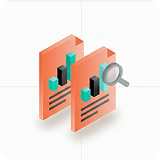
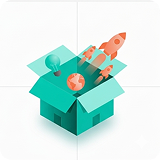

Case Study · EdTech · UX Research + Product Design
Second Brain: Designing Against Study Overwhelm & Inconsistency
Project Overview
SecondBrain is an intelligent UPSC preparation platform designed to help aspirants manage their entire learning journey in one place. Instead of switching between notes, current affairs websites, PDFs, coaching materials, and multiple productivity tools, students can learn, revise, track progress, and generate study resources through a single AI-powered ecosystem.
The platform combines personalized learning, AI-assisted content generation, progress analytics, and structured revision systems to improve preparation efficiency and reduce information overload.
Dashboard
The Student's Command Center
The Dashboard acts as the central hub of the platform, helping students stay focused on what matters most every day.
Most students struggle with knowing what to study next. The Dashboard eliminates decision fatigue by creating a clear roadmap for the day.
Learn Page
Personal Knowledge Repository
The Learn Page serves as the student's digital library where all learning resources are automatically organized and stored.
Students often lose valuable insights generated during study sessions. The Learn Page ensures every piece of knowledge remains searchable and accessible.
Calendar & Revision Planner
Structured Preparation System
The Calendar helps students maintain consistency through intelligent planning and revision scheduling.
UPSC preparation is a long-term process. The Calendar transforms scattered studying into a structured and sustainable system.
AI Chatbot
UPSC-Specialized Learning Assistant
The AI Chatbot acts as a personal mentor trained specifically for UPSC preparation, providing instant help across concept learning, answer writing, content generation, and current affairs assistance.
Instead of searching across multiple platforms, students receive personalized guidance and content generation within seconds.
Statistics & Performance Analytics
Data-Driven Improvement System
The Statistics Page helps students understand their strengths, weaknesses, and preparation trends through data-driven insights.
Most aspirants know how much they study but not how effectively they study. Statistics convert study activity into actionable insights.
Current Affairs Engine
UPSC-Ready News Intelligence
A dedicated current affairs system transforms daily news into exam-focused study material, saving hours of manual filtering and note-making.
Students spend less time collecting information and more time understanding and revising it.
Impact
SecondBrain transforms UPSC preparation from a fragmented process into an integrated learning ecosystem where:
Learning happens through AI — personalized, adaptive, and always available.
Notes are generated automatically from any source material.
Revision is intelligently scheduled with spaced repetition.
Performance is continuously analyzed to identify weak areas.
Current affairs become exam-ready content automatically.
Every study session contributes to a growing personal knowledge base.
Want to see the full research, personas, and design process?
Problem
Students preparing for competitive exams appear productive — they create study plans, use multiple apps, and spend hours studying. However, this effort rarely translates into consistent progress or real mastery. Despite having access to tools like note-taking apps, flashcards, and AI assistants, students struggle to maintain an effective study system.
Research
Secondary Research (Indian Context)
Students preparing for competitive exams rely on a combination of tools like Notion for planning, Anki for revision, Forest for focus, Unacademy for structured learning, and ChatGPT for instant doubt-solving. While each tool is effective in its own domain, they operate in isolation and fail to support the complete learning journey. This fragmented ecosystem increases cognitive load, disrupts consistency, and prevents students from translating effort into meaningful progress.
| Product | Daily Planning | Active Recall | Spaced Repetition | Progress Tracking | Focus / Distraction Control | Context-aware AI | All-in-one System |
|---|---|---|---|---|---|---|---|
| Notion | Strong | — | — | Basic | — | — | — |
| Anki | — | Strong | Strong | Limited | — | — | — |
| Forest | — | — | — | — | Strong | — | — |
| Unacademy | Limited | Partial | — | Basic | — | — | — |
| ChatGPT | — | Limited | — | — | — | Limited | — |
User Survey (Quantitative Research)
The goal of this survey was to identify patterns in study behavior, challenges, and motivation. Insights helped uncover why students struggle with consistency despite using multiple tools.
User Interviews
The goal of these interviews was to understand deep behavioral patterns, emotional triggers, and real study habits beyond surface-level survey data. What I explored: how students actually study daily, how they revise and retain information, what breaks their focus and motivation, how they measure progress, and emotional struggles during preparation.
Affinity Mapping






Students are highly active but lack direction and feedback. Their study journey is unstructured, emotionally unstable, and hard to measure.
The interviews revealed that the core issue is not lack of effort, but the absence of a guided, connected learning system that supports execution over planning, active learning over passive reading, and confidence over anxiety.
User Persona

Behavior
Creates detailed study plans (Notion, schedules). Spends time organizing instead of studying. Constantly restructures plans.
Pain Points
Feels overwhelmed by syllabus. Gets stuck in planning loop. Struggles to take action.
"I plan everything perfectly… but I don't follow it."
Needs
Clear daily direction · Reduced decision-making · Action-focused system

Goal: Understand and remember concepts effectively
Behavior
Re-reads notes multiple times. Highlights important sections. Watches lectures repeatedly.
Pain Points
Forgets information quickly. Feels prepared but performs poorly. No structured revision method.
"I study a lot, but I still forget everything in exams."
Needs
Active recall methods · Structured revision system · Feedback on understanding

Goal: Stay focused and build consistency
Behavior
Uses multiple tools (apps, videos, AI). Gets distracted easily. Starts strong but loses momentum.
Pain Points
Breaks focus frequently. Feels guilty after unproductive days. Inconsistent study routine.
"I start well, but I can't stay consistent."
Needs
Distraction control · Structured study flow · Motivation support
Final Problem Statement
Students preparing for competitive exams struggle to plan their daily study, revise effectively, and track meaningful progress, because their learning process is fragmented across multiple tools, relies heavily on passive methods, and lacks clear feedback on actual understanding. As a result, they experience cognitive overload, inconsistent study habits, and declining motivation, making it difficult to sustain long-term preparation and achieve mastery.
Ideation
How Might We (HMW) Questions
Based on the research insights, the following questions were framed to guide the design direction:
How might we guide students daily without overwhelming them?
How might we make revision active and effective?
How might we show real progress to keep students motivated?
Key Solution Ideas
Information Architecture

User Flow
User Journey Mapping
| Stage | User Action | Thought | Pain Point | Opportunity |
|---|---|---|---|---|
| Awareness | Discovers app via social or peer | "Maybe this will help me stay consistent" | Skeptical after trying many tools | Clear value prop showing unified system |
| Onboarding | Sets up goal, exam, subjects | "This feels personalized" | Long setup feels tedious | Progressive onboarding with immediate value |
| Daily Study | Opens dashboard, sees today's tasks | "I know exactly what to do today" | Distraction during sessions | Focus mode with distraction blocking |
| Note Taking | Uploads notes, AI generates cards | "My notes are ready for revision automatically" | Manual conversion is tedious | One-click AI conversion |
| Revision | System prompts, user completes cards | "I'm actually testing myself" | Forgetting to revise | Smart spaced repetition reminders |
| Progress Check | Views mastery map, readiness score | "I can see where I'm strong and weak" | Tracking hours not understanding | Mastery-based progress visualization |
| AI Help | Asks AI for concept explanation | "The AI knows my context" | Generic AI responses | Context-aware AI tied to notes and progress |
| Motivation | Sees streak, small wins, encouragement | "Even when I fail, the app supports me" | Guilt after missed days | Compassionate streak system with recovery mode |
Design System
SecondBrain — Style Guide
Key visual and UX decisions for the AI-powered preparation ecosystem.
Brand Personality
Color Palette
Typography
UI Components
Design